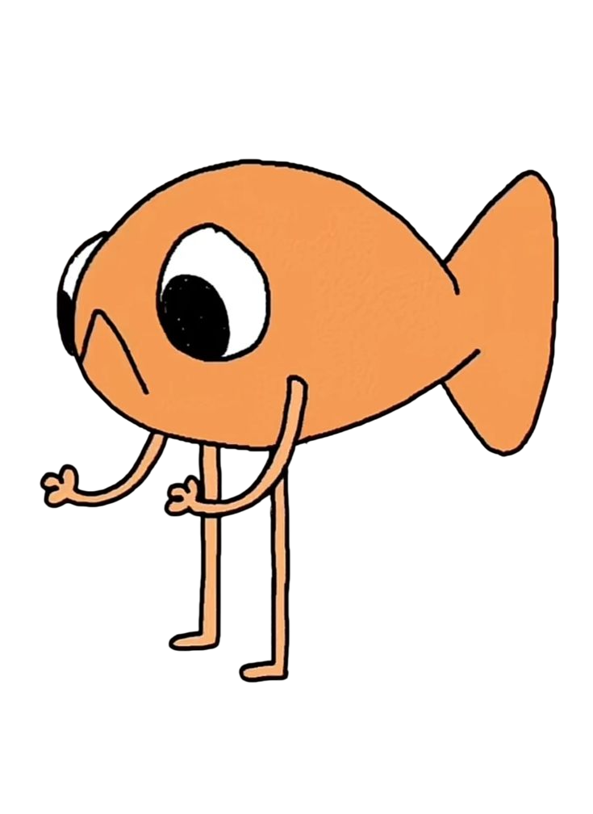

Je vis dans les profondeurs de l’océan avec mes amis… enfin, je vivais. Parce que depuis quelque temps, l’océan devient de plus en plus vide. La surpêche menace notre maison, notre nourriture, notre avenir. Des milliers d'espèces marines disparaissent, des écosystèmes s’effondrent, et les océans, autrefois pleins de vie, deviennent silencieux… Mais toi, tu peux faire la différence.
Explore ce site pour comprendre les dangers de la surpêche, découvrir des solutions concrètes, et surtout, apprendre comment agir à ton échelle pour protéger la vie marine. Ensemble, on peut sauver mes amis, et redonner à l’océan toute sa richesse